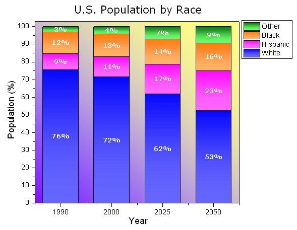
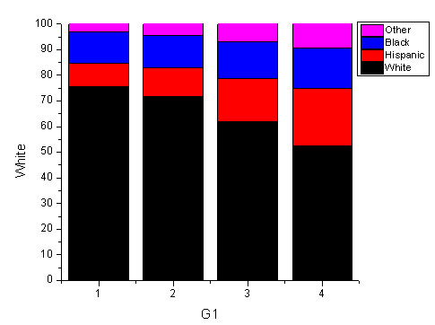
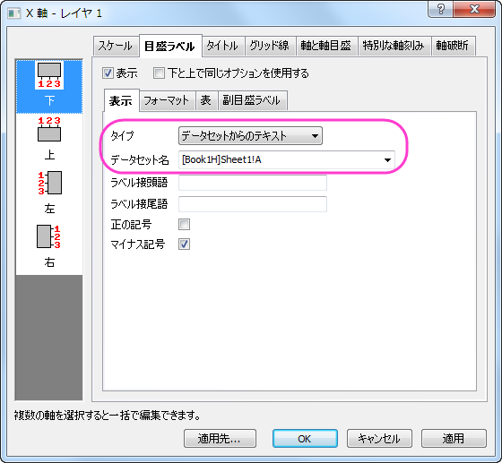
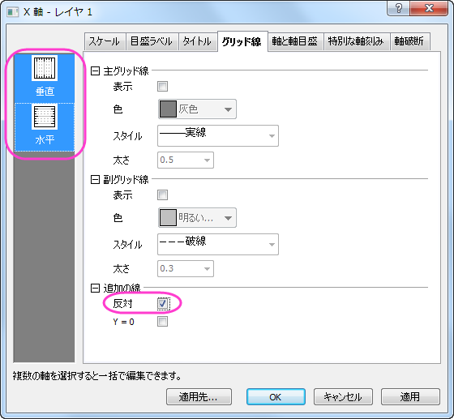
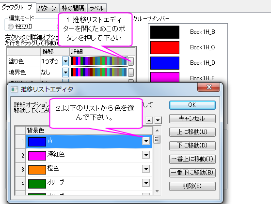
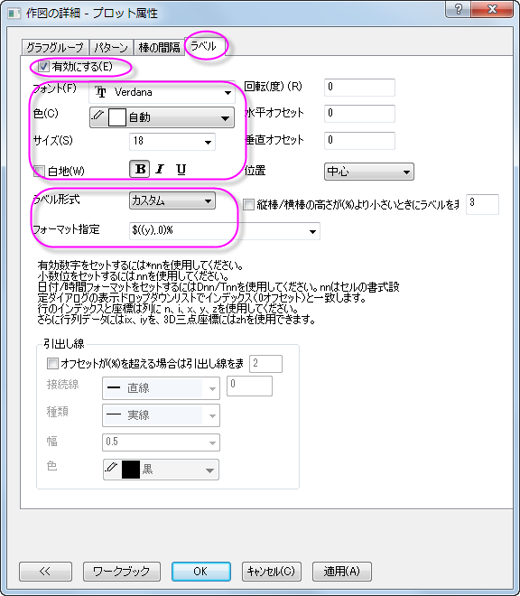
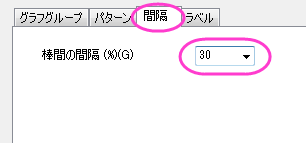
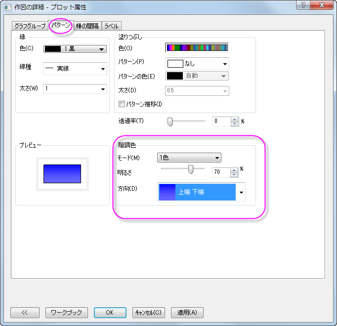
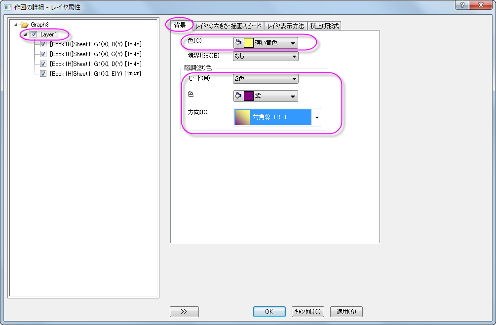

ラベル付き積み上げ縦棒グラフ
StackColumn-Labels
サマリー
このグラフは積み上げ棒グラフを表示します。各列内にあるデータポイントはカスタムフォーマットでラベル付けされています。
- 
必要なOriginのバージョン: Origin 2015 SR0以降
学習する項目
このチュートリアルでは、以下の項目について説明します。
- 積み上げ縦棒グラフを作成する
- 縦棒グラフにラベルを追加する
- 縦棒グラフをを編集する
ステップ
このチュートリアルは、チュートリアルデータプロジェクト（<Origin EXE フォルダ>\Samples\TutorialData.opj）と関連しています。
- Tutorial Data.opjを開き、プロジェクト・エクスプローラ (PE)でStack Column With Labels フォルダを開きます。
- ワークシートをアクティブにし、列Bから列Eを選択、作図：棒、円、面積：積み上げ縦棒グラフと選択します。 あるいは、2Dグラフツールバーから「積み上げ縦棒グラフ」のボタンをクリックします。
- 
- 軸目盛ラベルをダブルクリックして、「軸」ダイアログボックスを開きます。目盛ラベルタブに移動し、X 軸の目盛ラベルを以下のように設定します。
- 
- グリッド線タブを開きます。Ctrlキーを押しながら水平と垂直、両方のアイコンを選択してX軸とY軸を同時に編集します。追加の線の反対のチェックを付け、グラフの枠を表示します。
- 
- スケールタブを開き、左側パネルで垂直アイコンを選択します。Y 軸の終了を102に設定し、OKをクリックして軸ダイアログを閉じます。
- グラフをダブルクリックして、「作図の詳細」ダイアログを開きます。 グラフグループタブを開き、下図のように塗り色を設定します。
- 
- ラベルタブで有効にするを選択します。 フォント、色、サイズをそれぞれVerdana、白、18に設定します。 ラベル形式をカスタムに設定し、フォーマット指定に「$((y),.0)%」と入力します。
- 
- 棒の間隔タブをクリックし、棒の間隔(%)を30にします。
- 
- パターンタブでは、以下のように階調色を設定します。
- 
- 左のパネルで、Layer 1を選択します。 背景タブでは、色と階調塗り色を次のように設定します。
- 
- OK をクリックして、ダイアログを閉じます。 グラフを完成させるにはXとY軸のラベルを それぞれ、「Year」と「Population(%)」に設定し、グラフのタイトルとして「US Population by Race」と設定します。